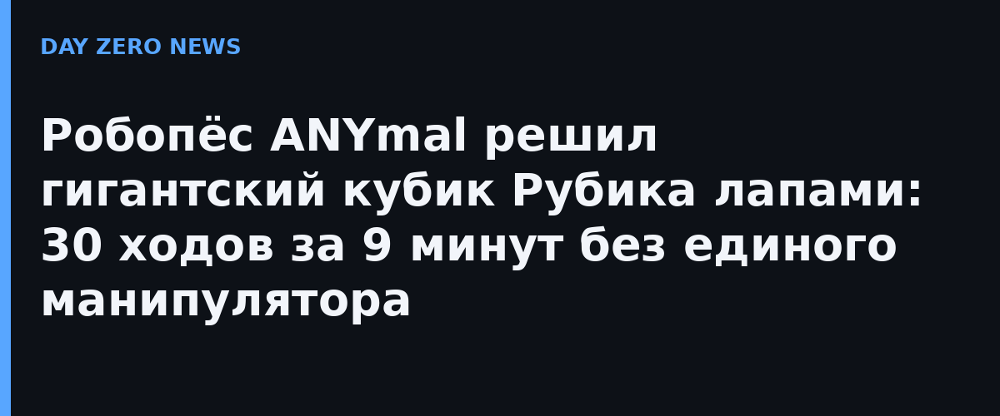

Лаборатория Robotics Systems Lab Швейцарской высшей технической школы Цюриха (ETH Zürich) показала, как служебный робот-пёс ANYmal-D справляется с гигантским кубиком Рубика весом около 4,6 кг. Никаких рук и манипуляторов: робот крутит слои передними лапами, удерживая равновесие на задних. В науке это называют педипуляцией — «манипулирование ногами», и именно оно оказалось самой сложной частью задачи.
Процесс разбит на три фазы: сканирование, планирование и исполнение. Бортовая RGB-D камера обходит куб со всех сторон, робот переворачивает его лапами, распознаёт цвета всех граней, а алгоритм Кочембы строит решение примерно в 20–30 ходов — чтобы собаке не пришлось делать лишних опасных движений. Ключевой трюк инженеров: куб специально сделали тяжёлым, чтобы нижний слой сам не проворачивался, — одна лапа прижимает куб, вторая поворачивает верхние слои. Навыки переворота и поворота слоёв обучены reinforcement learning и переведены в политики, которые работают только с бортовыми датчиками и выдерживают даже внешние помехи.
Система трижды решила куб полностью автономно от начала до конца: около 30 ходов, 8–9 минут на решение, без ошибок-перекосов, которые обнулили бы заранее просчитанный план. Статья «Solving a Giant Rubik's Cube with a Quadruped Robot» выложена на arXiv 17 октября, видео и материалы — на странице проекта лаборатории.
На первый взгляд — забавная демонстрация. На деле это тест на то, чего не хватает полевым роботам: долгие многоступенчатые физические задачи, где каждая ошибка портит все последующие шаги. Тот, кто умеет стабильно и точно взаимодействовать с механизированным объектом часами, сможет открыть вентиль, собрать образец или обслужить оборудование в опасной среде — без оператора и без манипулятора.